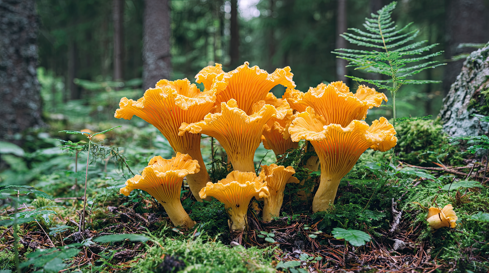
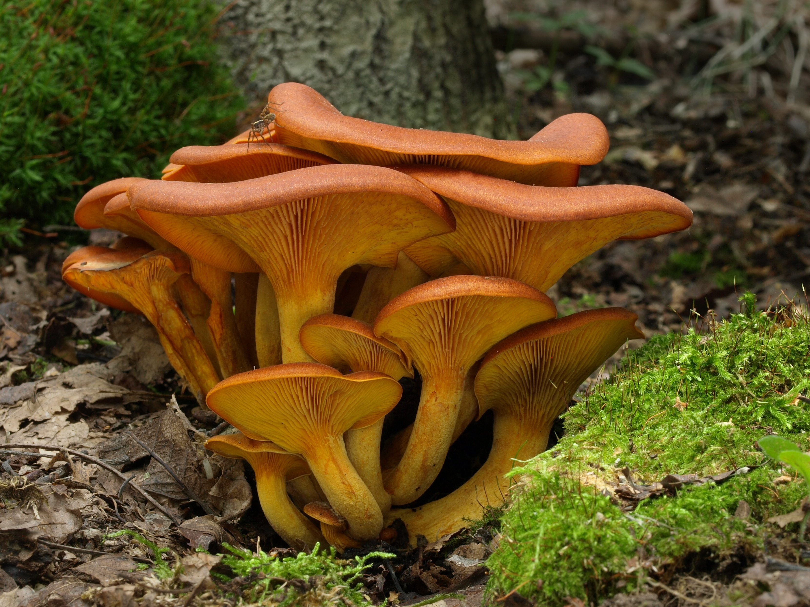

Golden Chanterelle Mushrooms
Cantharellus cibarius.
Golden chanterelles are a highly prized edible mushroom, celebrated for their delicate flavor and faint apricot aroma. They grow in forests across Europe, typically from summer through late fall, forming symbiotic relationships with trees. Their funnel-shaped caps range from pale yellow to deep gold, making them a bright and easily recognizable presence on the forest floor. Widely used in culinary dishes, chanterelles can be sautéed, preserved, or added to sauces, and are considered a choice mushroom by foragers and chefs alike.
Chanterelles have false gills—ridges that run down the stem rather than separate gills—and a cap that is funnel-shaped with wavy edges. Their flesh bruises slightly reddish when handled, and they leave a yellowish spore print. They are firm, hollow inside at the base of the stem, and never form the brain-like or deeply wrinkled shapes typical of poisonous lookalikes.

Jack-O'-Lantern Mushrooms
Omphalotus olearius.
The jack-o’-lantern mushroom is a bright orange, poisonous fungus found in woodland areas of southern Europe, often growing on decaying stumps, roots, or at the base of hardwood trees. Though visually similar to edible chanterelles, it contains the toxin illudin S, which can cause severe cramps, vomiting, and diarrhea if consumed. This mushroom is notable for its bioluminescent gills, which glow a faint blue-green in low light, adding a striking, eerie effect to forest floors at night.
Jack-o’-lantern mushrooms have true, sharp, decurrent gills that run down the stem, unlike the blunt ridges of chanterelles. The cap and stem are the same bright orange color inside and out, and the flesh does not change color when bruised. Their caps are generally funnel-shaped, and the gills alone glow faintly in the dark due to natural bioluminescence, making them easy to distinguish from edible lookalikes.